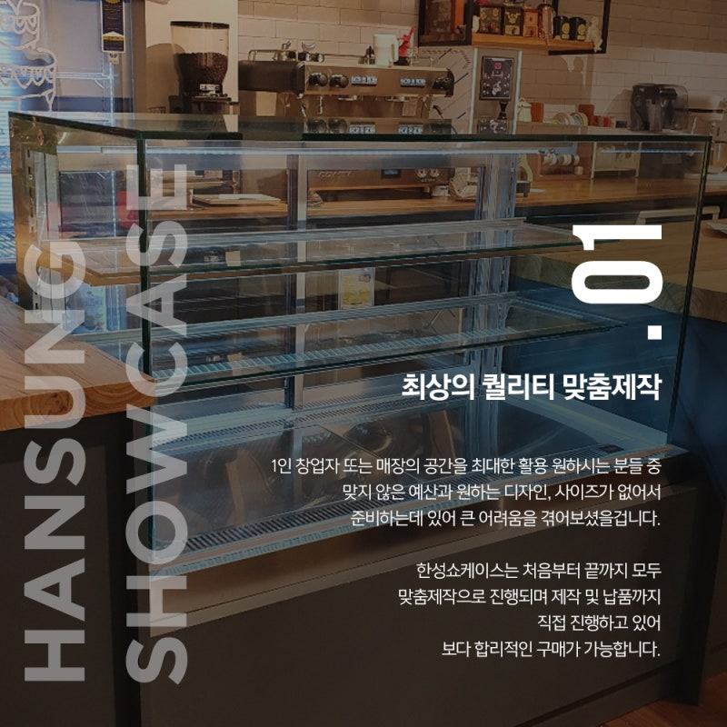
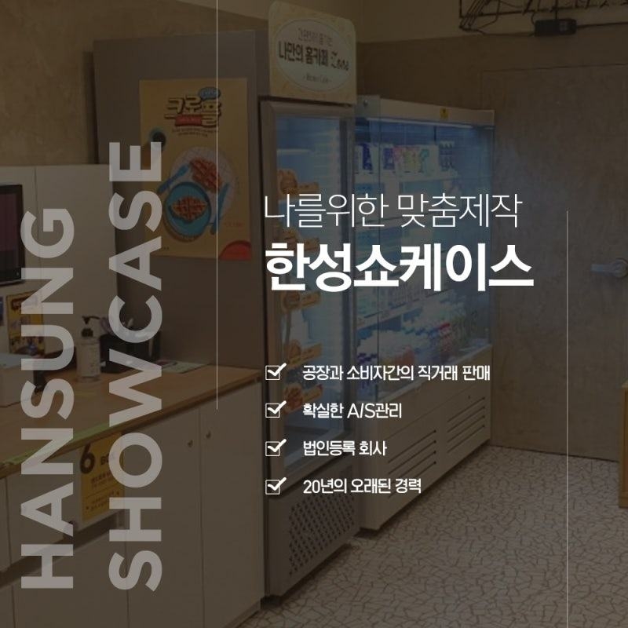
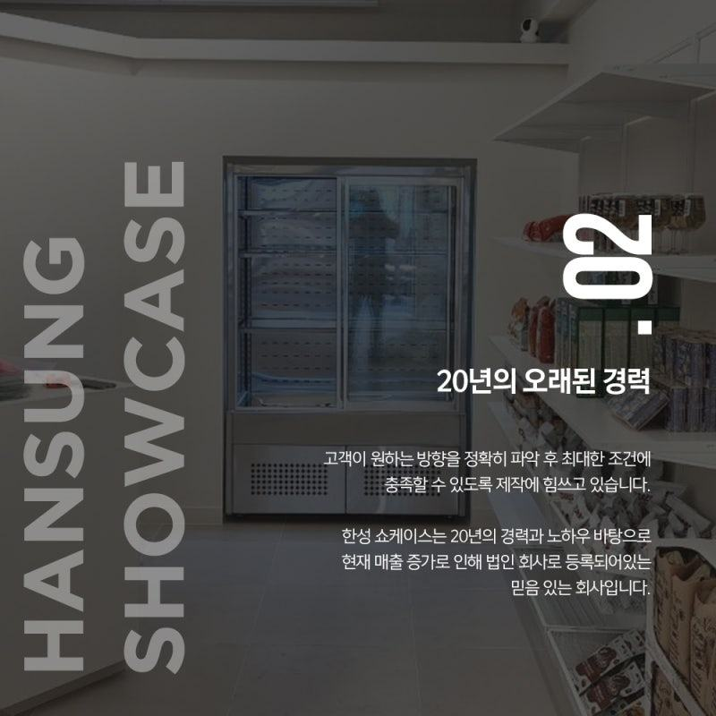
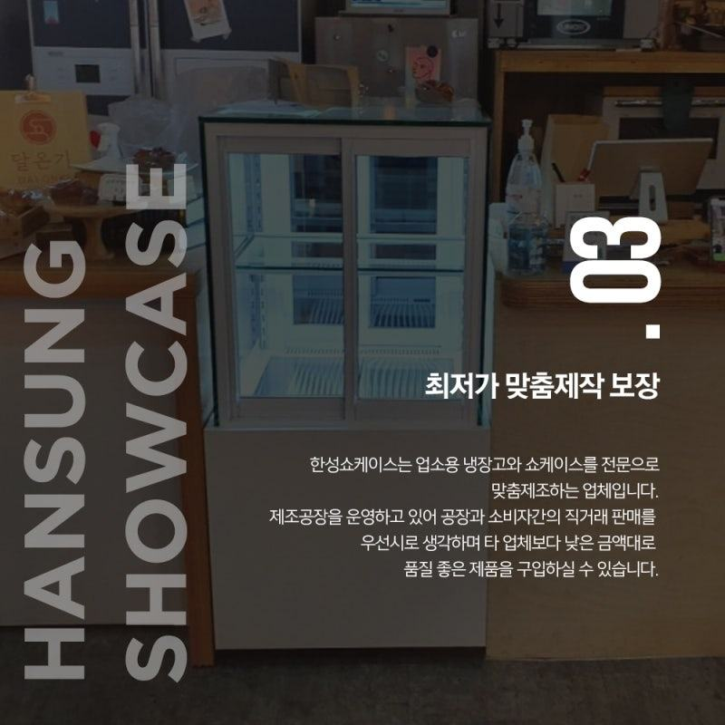

정육쇼케이스
정육쇼케이스 보증, 계약 전에 확인할 무상 A/S 범위와 조건

정육쇼케이스 보증은 무상 기간이 언제부터 시작되는지, 부품·출장·콤프레셔까지 어디까지 포함되는지, 어떤 경우에 제외되는지를 계약 전에 글로 받아 두셔야 합니다. 여기에 고장 접수 후 누가, 얼마나 빨리 오는지까지 확인해야 실제로 쓸모 있는 보증이 됩니다.
안녕하세요. 정육점과 정육식당에 들어가는 쇼케이스를 기획부터 설치까지 직접 맡는 한성쇼케이스입니다.
정육쇼케이스는 하루도 쉬지 않고 돌아가는 장비라 언젠가는 점검이 필요합니다. 그런데 막상 문제가 생겨 연락해 보면 보증 기간이 이미 지났다거나, 이 부분은 보증 대상이 아니라는 답을 듣고 당황하시는 사장님들이 계십니다.
고기는 온도가 조금만 흔들려도 색이 변하고 육즙이 빠지는 상품이라, 냉장 장비가 멈추는 시간이 곧 손실입니다.
그래서 정육쇼케이스는 살 때 보증 조건을 꼼꼼히 확인하는 것이 고장 난 뒤에 대응하는 것보다 훨씬 중요합니다.
오늘은 정육쇼케이스를 계약하기 전에 보증과 관련해 꼭 물어보고 받아 두어야 할 내용을 정리해 드리겠습니다.
1. 무상 기간은 언제부터 시작되나
같은 기간이라도 출고일부터 계산하는지, 설치일부터 계산하는지에 따라 실제로 쓸 수 있는 기간이 달라집니다.
맞춤 제작은 출고와 설치 사이에 시간이 생길 수 있으니, 기준일이 무엇인지 계약서에 적어 달라고 하세요.
인테리어 공사가 늦어져 설치 후 바로 영업하지 못하는 경우도 있습니다. 이런 상황이라면 영업 시작 전에 시운전으로 온도와 소음을 미리 확인해 두는 것이 좋습니다.
- 보증 기준일이 출고일인지 설치일인지 확인하세요.
- 보증서나 계약서에 기간을 적어 두세요.
2. 어디까지 포함되는지
보증이라고 해도 부품비만 무상인지, 출장비와 수리 인건비까지 포함인지는 업체마다 다릅니다. 콤프레셔, 컨트롤러, 팬모터처럼 비싼 부품과 냉매 보충이 포함되는지도 따로 물어보세요.
정육쇼케이스는 조명과 유리, 문 패킹처럼 매일 손이 닿는 부분도 많습니다. 소모품으로 분류돼 보증에서 빠지는 항목이 무엇인지 미리 알아 두시면 나중에 오해가 없습니다.
견적을 여러 곳에서 받으셨다면 보증 항목만 따로 떼어 표로 비교해 보세요. 금액이 비슷해 보여도 출장비 포함 여부나 콤프레셔 보증 여부에서 차이가 나는 경우가 많고, 이 차이는 첫 고장이 났을 때 바로 체감됩니다.


3. 보증이 안 되는 경우
대부분 보증은 사용자 과실이나 임의 개조, 정해진 전기 조건을 지키지 않은 경우를 제외합니다. 기계실 통풍구를 막아 두거나 응축기 청소를 오래 하지 않아 생긴 고장도 다툼이 생기기 쉬운 부분입니다.
매장을 옮기면서 쇼케이스를 직접 이전 설치한 경우 보증이 이어지는지도 확인 대상입니다. 이전 계획이 있다면 계약 때 미리 말씀해 두세요.
- 제외 조건을 글로 받아 두세요.
- 응축기 청소 등 관리 기록을 남겨 두세요.
4. 누가, 얼마나 빨리 오는지
보증 기간보다 더 중요한 것이 대응 속도입니다. 판매한 곳과 고치는 곳이 다르면 접수 단계에서 시간이 걸리고, 지방 매장은 기사 방문까지 며칠이 걸리기도 합니다.
우리 지역에 서비스할 수 있는 곳이 있는지 계약 전에 물어보세요.
24시간 운영하는 무인 정육점이라면 고장이 새벽에 생길 수도 있습니다. 온도 이상을 알려 주는 기능이 있는지, 긴급할 때 고기를 옮길 예비 냉장 공간이 있는지도 함께 준비해 두면 손실을 줄일 수 있습니다.
고장 접수 때는 모델명과 설치일, 증상이 나타난 시점, 현재 표시 온도를 함께 알려 주시면 기사님이 필요한 부품을 챙겨 올 수 있어 수리가 빨라집니다.
명판 사진을 휴대폰에 미리 찍어 두시길 권해 드립니다.
체크리스트
- 보증 기준일(출고·설치)
- 부품·출장·인건비 포함 여부
- 콤프레셔·냉매 보증 여부
- 소모품·제외 조건
- 이전 설치 시 보증 승계
- 지역 서비스와 접수 방법
현장에서 자주 보는 경우: 맞지 않는 기성품을 들였다가 다시 사는 정육점
기성품 정육점쇼케이스는 모양과 사이즈가 정해져 있어서, 매장과 맞지 않아 다시 사거나 처분하는 경우가 생각보다 많습니다.
작은 매장이나 1인 매장은 특히 공간에 맞지 않는 제품을 억지로 쓰다가 결국 교체를 고민하시게 되죠.
이렇게 판매처가 바뀌면 보증과 A/S를 받을 곳도 함께 흩어집니다.
그래서 상담을 요청하시면 매장 상황과 인테리어를 먼저 듣고 기획, 제작, 완성, 설치까지 한곳에서 진행합니다.
유통 회사가 아니라 직접 만들고 설치하는 구조라, 전자제품 특성상 생길 수밖에 없는 A/S도 만든 곳에서 이어서 맡습니다.
제품은 팔 때보다 사신 뒤가 더 중요하다는 생각으로 사후 관리를 챙기고 있습니다.



자주 묻는 질문
보증 기간이 끝나면 수리를 못 받나요?
보증 기간이 끝나도 유상으로 점검과 수리를 받으실 수 있습니다. 부품 공급이 계속되는 제조사 제품인지가 오래 쓰는 데 더 중요합니다.
보증을 위해 평소에 해 둘 일이 있나요?
기계실 통풍구를 막지 않고, 응축기 먼지를 정기적으로 청소하고, 그 기록을 남겨 두시면 좋습니다. 문제가 생겼을 때 원인을 파악하는 데도 도움이 됩니다.
지방 매장도 A/S를 받을 수 있나요?
한성쇼케이스는 전국 240여 개 A/S 센터를 운영하고 있어 지역에 관계없이 접수하실 수 있습니다. 대표전화 031-986-2458로 연락해 주세요.
매장 조건에 맞춰 만드는 한성쇼케이스
원하시는 제품 사진과 설치할 공간 사진만 보내 주셔도 매장에 맞는 구성을 추천해 드립니다.
- 전국 240여 개 A/S 전담 센터 운영
- 본사 대량 자재 매입으로 품질 대비 합리적인 가격
- 유럽제·삼성 냉각 콤프레셔 적용
- 국내 최초 쇼케이스 전문 디자이너 상주
매장 폭과 원하는 진열 구성을 알려 주세요. 실측과 견적을 안내해 드립니다.
031-986-2458